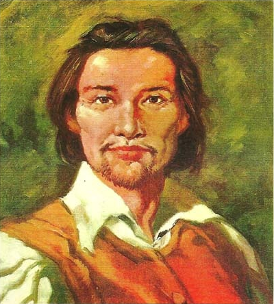

História do Maranhão
Os primeiros europeus a chegarem à área que hoje corresponde ao Estado do Maranhão foram os espanhóis, em 1500. Os portugueses tentaram retomar o território 35 anos depois, mas fracassaram. Em 1612, um grupo de 500 franceses munda a França Equinocial. ... Em 1612, a Coroa instituía o Estado do Maranhão e Grão-Pará.
Em 1612, Daniel de La Touche comandou uma missão francesa até a ilha de Upaon-Açu e tornou-se um dos fundadores do povoado da França Equinocial, chegando a construir o Fourt de Saint-Louis, nome dado em reverência ao rei de seu país. Neste momento, nascia a futura capital do Maranhão: cidade de São Luís.
Os portugueses decidiram reivindicar o território ocupado e expulsaram os franceses em 1615, sob comando de Jerônimo de Albuquerque Maranhão, que lutou ao lado de algumas tribos indígenas. O nome que deu origem ao estado tem relação com o Rio Marañón do Peru, que em linguagem tupi significa ‘mar’, ‘corrente’.
Gastronomia
Foram tantos os temperos e influências de europeus, índios, africanos e outros povos, que a culinária maranhense só poderia dar no que deu: uma conjunção exuberante, única, inigualável de sabores e receitas na medida para surpreender. Nessa mesa farta existe, é claro, um carro chefe. É o celebrado arroz de cuxá, que vai muito bem com frutos do mar e tem como principal ingrediente uma folha azedinha chamada vinagreira, além de camarão seco e gergelim.
O camarão grelhado preparado em Atins. E os sucos. E as iguarias como os doces de espécie típicos de Alcântara, receita à base de coco de herança portuguesa. E os doces cristalizados, em massa ou calda, à base de frutas regionais, como caju, buriti, bacuri, jaca e abacaxi.
Abacaxi que, no Maranhão, especificamente os da região de Turiaçu, município da pré-amazônia maranhense, é muito admirado pelo seu sabor e baixa acidez. Para quem visita o sul do Maranhão, o sabor fica por conta das carnes, com destaque para a carne de sol, que quando preparada com arroz, se transforma na deliciosa Maria Isabel. E, é claro, os churrascos.